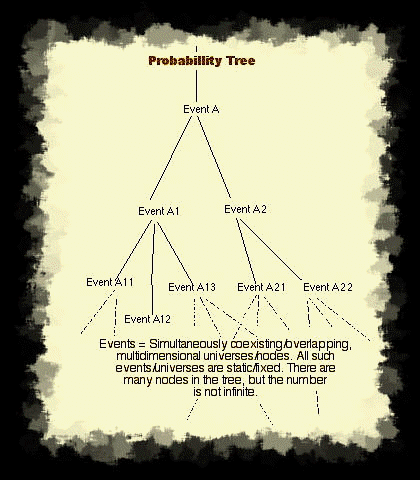

Last Updated: Thu, February 07, 2008
Time does not exist
(and neither does motion)
How can this be you ask?:
I've been running around saying time does not exist for many years. There
are a few books out there that do a good job of illustrating this belief,
and I thought I'd write a silly little web page about my 'No such thing as
time/or motion' belief. I guess you'd have to say it's a belief. It can't be
proven or disproved in accordance with scientific theory (or can it), so
it's not a theory. Can you 'prove' a negative?
I'm going to try and explain the nonexistence of
time (and coincidentally the nonexistence of motion) in simple
terms. Sure you can read about quantum physics and chaos theory in a book.
But trying to understand it is no simple task. I promise not to make you do
any math.
Origins of this 'Theory':
First and foremost, my beliefs on the nonexistence of time began very early.
In grade school math class, I did a project for extra credit. I described a
four dimensional cube to my class. Not all that difficult; hypercubes have
been part of math, physics, and geometry for hundreds, if not thousands of
years. After the extra credit project, I began wondering about higher
dimensional objects. I started thinking about shadows and lower dimensional
objects. As I made my way through high school, I read a few other books
about metaphysics. Eventually I formulated a few wild eyed ideas of my own.
Nothing I could prove, but something I've been describing to anyone who
would listen for many years.
Time simply does not exist. I guess
you could call me a materialist. If you can't sense something with your
senses does it really exist? Try to describe time, without using time as a
reference. We can't see it, can't smell it, can't taste it, etc, etc. Are
there any machines that can measure it? A clock? really? What does a clock
measure? The movement of its own hands? That's time? What does a
clock really measure? Is time defined by the motion of our planet around the
sun?
Let's get a little more interesting. If time does exist when was it created?
Did it always exist? Did it exist before man came along? Does time really
slow down if an object approaches the speed of light? I seriously doubt it.
Where does time slow down? Does all time slow down? Just the time around the
object moving near the speed of light? I thought time or for that matter the
speed of light were supposed to be universal standards. On with some
explanations...
Basics:
I'm not all that good at math, so don't expect me to recite formulas, or
provide any type of mathematical proof for my hair brained ideas. Others
have already tried that. I tried to follow their math, but all it did was
give me a head ache. If you want proof, you might want to try a simpler
subject.
The basis of my crazy little ideas can best be defined through the basics of
quantum mechanics and theoretical physics. Once again, I'm not going to try
and provide mathematical proofs or formulas of any sort. If you'd like to
see that sort of thing, I suggest you check out a good quantum physics book.
These theories about time not existing rest primarily on the belief in the
existence of Multidimensional Universes,
and the Simultaneous Coexistence of these
Multidimensional Universes.
Multidimensional universes:
First off let's start with what we know. You know that you exist, right?
O.k. that's good. If you're not willing to admit this, you've got some
bigger problems to deal with. Next you must admit that you are a three
dimensional person/object. You have height, width, and depth. O.k. were on a
roll here. Objects in our immediate plane of existence can be defined as
having 3 dimensions. Humans can detect objects
that coexist in the same dimension (multidimensional universe) as them.
We exist in a universe which is defined by 3 specific dimensions. Let's call
them X, Y, and Z. Everything in this universe can be defined through
expressions of these 3 dimensions. Are you with me? Good. I'll take it that
you believe, and understand what I'm saying.
Let's expand on this a little bit. Solid objects in our universe exist
within a 3 dimensional framework. They have varying X, Y, and Z dimensions
that define their existence. Can we sense objects that do not have 3
dimensions? Sure we can, we can see 2 dimensional objects. We define 2
dimensional objects as having only 2 of the 3 dimensions that we can sense.
So, Humans can detect both 2 and 3 dimensional objects. We can detect
objects that are not fully 3 dimensional. We've just begun the journey. We
can detect objects that are not fully 3 dimensional; objects within a
multidimensional universe which overlaps ours, but we cannot detect objects
that exist wholly outside our subset of 3 dimensions.
2 dimensional, and 3 dimensional objects can coexist simultaneously without
interfering with each other. If something casts a shadow on a 3 dimensional
object the two coexist simultaneously. The shadow occupies the same physical
space as the solid object without displacing it (No sidetracking on the
other effects at this point). So here we can see that multidimensional
objects can coexist simultaneously within the same space. A 2
dimensional object and a 3 dimensional object can occupy the same physical
space.
Time to expand on that simple fact. Are there more dimensions than X, Y, and
Z? I believe there are. We humans are simply not capable of sensing these
other dimensions. We have no biological capability to sense these other
dimensions. Perhaps shadows are objects which consist of dimensions W, X and
Y, but we can only sense the X and Y dimensions of these objects. They
overlap our universe in dimensions X and Y, yet exist fully in a different
universe. One that is slightly offset from the universe that we exist in.
Overlapping, simultaneously coexisting, multidimensional universes.
You may have noticed that shadows are duplicates of 3 dimensional objects in
all but one aspect. They lack a 3rd dimension, or that 3rd dimension cannot
be detected by us. This adjacent, and partially detectable universe is
nearly identical to ours. What if these coexisting multidimensional
universes differed from ours in relation to their dimensional divergence?
Nearby frequencies/universes are nearly identical, while highly
divergent universes are much different.
Our universe overlaps these other universes, but we cannot detect them. They
coexist within the same framework, but are separated by dimensional
frequencies. Our universe resonates at dimensional frequency XYZ (With the
separate dimensional components mixed as a whole), and other universes
resonate at different dimensional frequencies. So we've got overlapping,
simultaneously coexisting, multidimensional universes. How many are
there? I don't know. I believe that the number is very large, but I do not
believe that it is infinite. We're now closer to the basis of the theory
that time (and motion) do not exist.
What is time?:
If time doesn't exist, what is it that we sense as the passing of time? I'm
glad you asked. Alright, let's talk about human experience for a minute.
Humans perceive the passage of time as a continuous, contiguous series
of linear experiences. We experience time as being continuous. It
doesn't appear to stop, slow down, or speed up at any point. We experience
it as contiguous. We don't jump over pieces of time. Skipping forward or
back to the points that interest us. Humans also experience time as being
linear. We can only experience things in a linear fashion. Moving
continuously in one direction, without the ability to reverse direction.
Without time how do you explain human experience? I explain it in the
following terms. It is a linear progression of ones consciousness
through simultaneously coexisting, multidimensional universes. A series
of experienced, but simultaneous nows. Your consciousness travels in one
direction down a specific probability path. Your life experience is the
contiguous progression of your consciousness from one simultaneously
coexisting multidimensional universe to another. Each node in the
probability tree is a different multidimensional universe. This experience
is also continuous (or experienced as being continuous). Our consciousness
is in constant motion. A continual state of experience (Or is it? What are
dreams?), as it traverses a probability tree through these simultaneously
coexisting multidimensional universes. The human mind/consciousness is not
capable of processing/experiencing all the nodes in any probability path
simultaneously, so it orders them into a linear series.
No motion:
A critical component of this 'No Time theory' is the non-existence of
motion. Several definitions of time express it as 'measurement of change'.
The measurable change of matter or energy. Change is motion. Without change
there is no motion. Without change there is no time. My/the theory of a
static and non changing multidimensional universe, removes change from the
equation. All possible positions of a physical body/object simultaneously
exist in a dimension/universe that is slightly offset from the physical
universe/reality which 'we' currently inhabit. There is no physical movement
of objects/bodies in this universe. All things/states of mater/energy
simultaneously coexist. The beginning and the end are static
unmoving/unchanging events. It is the processing (in a linear, continuous,
contiguous fashion) of these differing static nodes that creates the
illusion of motion, and thus the illusion of 'time' as changes appear to
occur. In my model of 'no time', there are no physical changes, thus 'No
motion'.

Probability paths: (See
illustration at left)
What is this probability tree that I mentioned? 'For every action there is
an equal and opposite reaction' The reaction to any action is not the only
possible reaction. There are many possible reactions to any action. A
probability tree is a map of all possibilities for any given event.
A probability path is the path followed down a probability tree in order to
reach your current multidimensional position (the 'Now').
Try to envision the probabilities inherent when a coin is flipped. The first
node of this probability tree is the point where the coin is flipped. After
the coin is flipped three new probabilities (at least three) branch out from
the initial node. There are three possibilities with regard to the outcome
of the coin flipping (in a simplistic/illustrative sense). Each of these
probabilities necessitates the existence/creation of another node. One for
'Heads', one for 'Tails', and one for the less likely result of 'Edge'.
The probability tree shown at the left is a crude illustration of a very
small subset. It maps out a very small number of possible events. In order
to expand it to the ultimate conclusion, you would have to take every
conceivable event, and map a probability tree for every possible outcome.
Doing so you would create a highly complex (but not infinite)
probability matrix. A map of all possibilities/existence within our
universe. Now imagine each possible outcome/node in the probability
tree as being a separate reality/multidimensional universe. A separate
static universe. Static indeed. Each possible event is an instantaneous Now.
A single node within the probability matrix. Now overlap all of these
realities/universes in the same space. Now you have those simultaneous,
coexisting multidimensional universes I've been talking about. A
'Multiverse'.
Consciousness and free will:
Based on my 'theory', and the tenets of it. You may be saying that
their is no individuality or "I" in regards to the physical sense. I'd
agree. The way I see it; "I" (or self-consciousness) is continuity of
consciousness from node to node within the matrix. You do not so much exist
as a singular physical entity as you do a consciousness, a non-physical
presence within the 'Multidimensional Universe'. Your consciousness roams
(but not in a physical sense) this multidimensional universe. Moving from
node to node, your experiences are formed as you select which node to
process.
You might also conclude that there is no 'Free Will'. There is an illusion of free will in selecting the branches of the probability tree. In fact, there's no selection at all. Every branch is selected, but just one at a "time" is observed or processed. This second point also follows from the first point. When there's no-one implementing the free will, there's no sense in claiming that free will exists.all nodal branch selections are made simultaneously. In a timeless model, that's the only way they could be. I do not agree that the selections are made without choice. The choice in selection is free will. Choice is free will, regardless of whether all choices are made simultaneously (universe with no time), or in a manner more consistent with a traditional model (universe with time). Another way to think of it...
While it's true that all nodal choices/connections within the probability matrix have already been made, and the results mapped into the probability tree. "I" (self-consciousness) decide which nodes/choices to experience/process. This constitutes the free will portion of the equation, which in effect creates the "I" or self-consciousness. Only by selecting a series of nodes to process, a path so to speak, is self-consciousness realized. Until a path through the matrix is chosen, the self does not exist. Self comes into being once a path has been chosen.If you are believe that someone else (god) chooses the path for you, then you have come to the conclusion that "your" destiny has been pre-ordained, and you are simply an observer. A side effect of path processing. You are destined to visit/experience/process each node in a pre-determined sequence. Each 'supposed' free action that you take has been mapped out ahead of time (so to speak). For example; if you decide at this moment to exercise free will by deleting this email, your choice to do so, including the supposed belief that it is by your free will, is all mapped out ahead of time.
I would argue that we do have free will. That the self is responsible for the nodal selection/processing (free will), that it is through nodal selection (mapping of our path through the probability matrix) that we realize free will, which in fact constitutes the self. We experience these nodal selections in a sequential manner, which is construed as the passage of time. The nodal selections are in fact instantaneous, but we do not experience them in that way. Selection and processing of the/a path through the probability matrix constitutes the self.
Conclusions:
So; Once again time does not exist. It is simply our mind
applying an understandable framework to the progression of our consciousness
through a series of static, overlapping, and simultaneously coexisting,
multidimensional universes. The progression of our consciousness occurs
in a linear, contiguous, and continuous fashion.
I hope that my explanation/theory has provided you with some answers
regarding the true nature of time. Perhaps it's also provided you with some
additional questions. What is an 'out of body experience?'. Can other
paranormal phenomena be explained within the context of simultaneously
coexisting multidimensional universes? Why do we have physical forms? What
is time travel in the context given above? Do higher dimensional beings
exist? Is there someway to see these other nodes? Can I learn to surpass
these human/consciousness limitations?
Debate/Discussion:
After the initial publication of this 'theory', I had a thorough
debate/discussion with some friends (and interested persons) of mine.
The debate took place via email (From Feb 19 - March 30, 2002 (and beyond)),
and covered various points of the 'no-time' theory. Through this discussion,
some of the theories finer points were clarified, some parts were expanded,
and an exploration of the theories ramifications was pursued. Here you will
find a copy of the emails which compromise the bulk of this dialog on the
non-existence of time (and motion). Perhaps it will help you to better
understand what this theory means, and how it could impact scientific study.
If nothing else, you might find it somewhat humorous.
(Note: Please send plain-text email without attachments to 'No time chat' correspondents. Mail directed to the privacy.net address will result in a bounce.)
Influences:
This theory isn't completely mine. It's the result of reading a lot of books,
watching late night sci-fi, and an highly overactive imagination. Some of the
books I've read that helped formulate the ideas presented above:
• The End of Time - The next revolution in physics - By Julian Barbour
Time/Time & Measurement: Two essays (18 pages) in the 'Dictionary of the History of Ideas'. Studies of selected pivotal ideas, Volume IV. published by Scribner's Sons (©1974) - By Milic Capek/G. J. Whitrow (Not available online (that I know of))
• Godel, Escher, Bach: An eternal golden braid - A metaphorical fugue on minds and machines in the spirit of Lewis Carroll - By Douglas R. Hofstadter
• Metamagical Themas: Questing for the essence of mind and pattern - An interlocked collection of literary, scientific, and artistic studies - By Douglas R. Hofstadter
• The Planiverse - Computer contact with a two dimensional world - By A. K. Dewdney
• Flat-land - The classic speculation on life in four dimensions - By Edwin A. Abbott
• Sphere-land - A continuing speculation on an expanding universe - By Dionys Berger (Translated from the original Dutch)
• The Illuminatus and Schrodinger's Cat trilogy's - A series of conspiracy riddled sci-fi novels, inspired by, and inspiring science - By Robert Shea and Robert Anton Wilson
• About Time. Einstein's unfinished revolution. Another book about time. This one was written by Paul Davies. An excellent book, with a lot of insightful stuff about time, cosmology, astronomy, and philosophy.
• God & The New Physics by Paul Davies.Some really interesting insights into the 'I' and 'Why'.
• The Matter Myth - Dramatic discoveries that challenge our understanding of physical reality. Written by Paul Davies and John Gribben.
For more of the books I've read see my list of favorite books.
Author:
Robert L. Vaessen
e-mail:

Last Updated: Thu, February 07, 2008